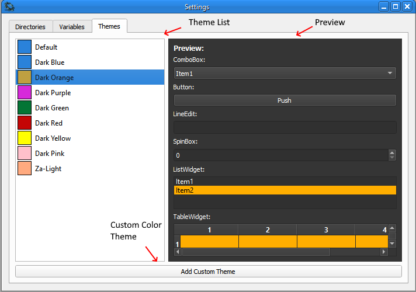

Not only can you choose from the options provided, user can create add a custom palette based on dark or light styles.
Note: This does not change the text color; only the main colors (highlights/background)
To create a custom palette; click on the 'Add Custom Theme' button.

You will go through a sequence of steps to select your color.
First you will provide your theme a name for future use.
Next you will select the style for theme; either light or dark.
Style is the background/main application color
Lastly, you will select the alternate color to use from the color wheel popup.

Click 'Ok' and then choose your newly created theme.